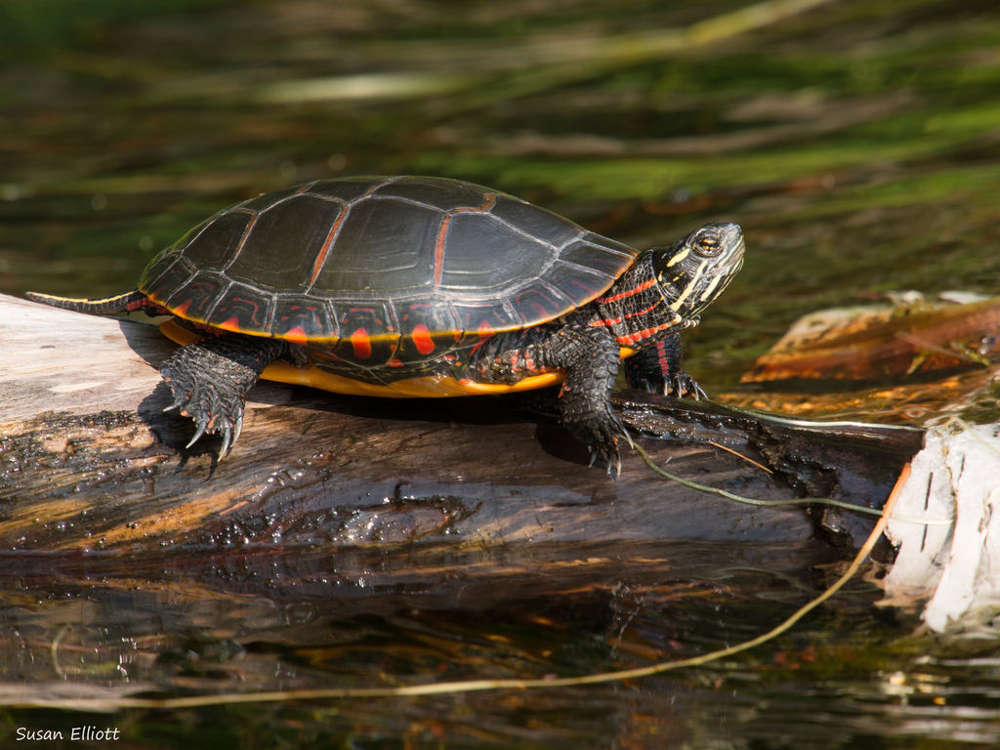
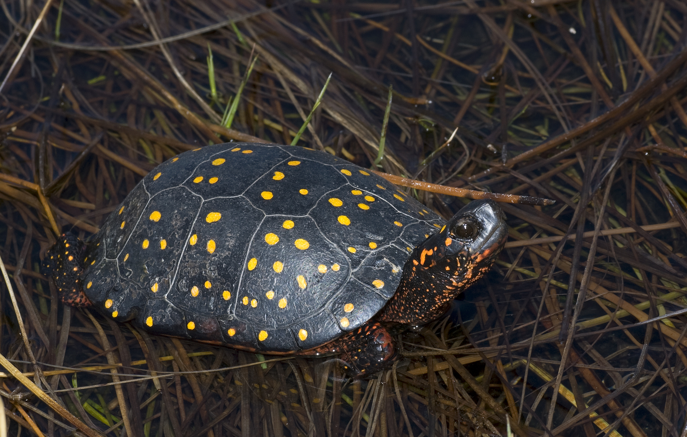
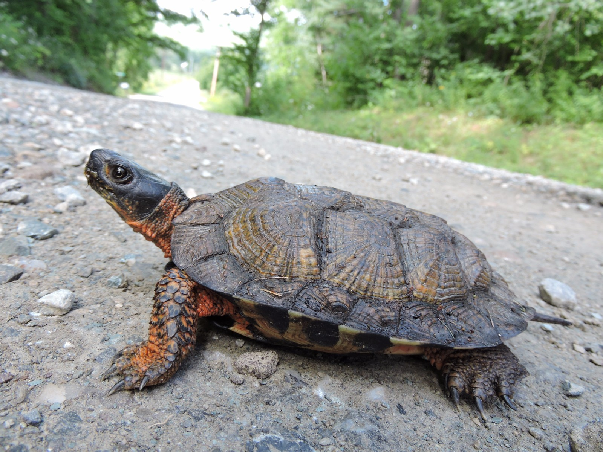
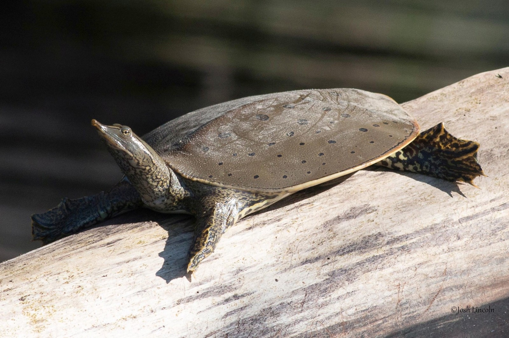
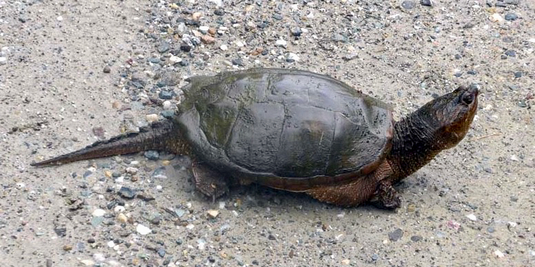
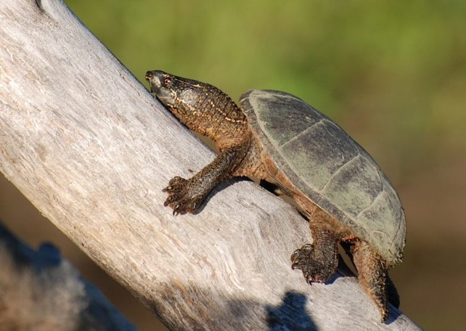

Painted Turtle (Chrysemys picta)

Spotted Turtle (Clemmys guttata)

Wood Turtle (Glyptemys insculpta)

Spiny Soft Shell (Apalone spinifera)

North American Snapping Turtle (Chelydra serpentina)

Eastern Musk Turtle (Sternotherus odoratus)